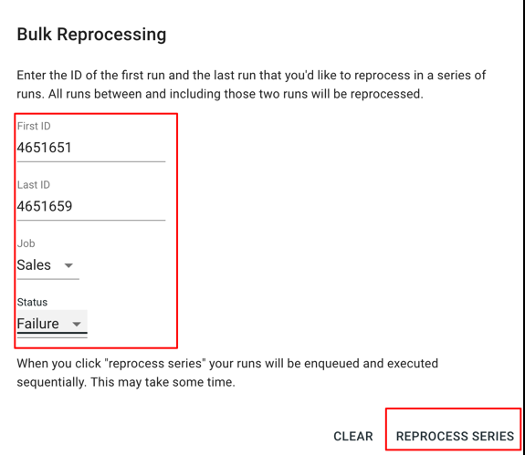

Platform Docs#
Connecting Source Applications#
Most modern web applications have a feature that allows you to push, publish, or post data to another URL when a certain event takes place. This event could be a form submission, mobile payment, patient registration, or barcode scan submission from a mobile app. The key is that your source application will notify OpenFn when something happens.
-
Go to the "settings" or "administration" page for your source app, and look for a
Webhook API,Data Forwarding API, orNotifications API. Write to the developers of your application if none is provided out of the box. -
When setting up forwarding, select to send messages in
JSONto your project'sinbox URL. This is a UUID that serves as your API token. You can find and copy your secure inbox URL by clicking on the "copy URL" link in the bottom-right corner of the project in question on your project dashboard page or by using the "Copy URL" button on your project's "Inbox" page.. -
Soon you'll see new messages arrive in your Inbox.
Creating a compatible notifications service#
If you are a developer, looking to set up a compatible notifications API for OpenFn, please see our Application Developers section.
Triggers#
Triggers run jobs. They can either be "filter" triggers or "timer" triggers. Filter triggers watch incoming messages and run them through jobs when they match the filter criteria. Timer triggers run jobs after a recurring interval has elapsed.
You, as a user, specify the filter criteria which determines which messages in your inbox should trigger job runs. This means that if any segment of a message body matches the string of JSON you gave as a filter, the filter will run and trigger a job (assuming you created one).
The filter criteria takes the form of a string of valid JSON. In a SQL query, this string will be used in the WHERE clause, for example:
1 2 3 | |
Filter Matching#
To illustrate filter matching, refer to the JSON strings below. Message "a" will match filter '1', but message "b" will not.
Filter 1:#
1 | |
Message a (MATCH):#
1 2 3 4 5 6 7 | |
Message b (NO MATCH):#
1 2 3 4 5 6 7 | |
Message 'b' does not include "formID":"patient_registration_v7" and will not match filter '1'.
Processing time-triggered jobs#
On-demand processing for jobs triggered by timers. If you’re leveraging timer triggers to run jobs at specific time intervals, you can now run a time triggered job on demand. This way you don’t have to wait for the timer to expire before testing! Simply click the process/ “play” button now available via the Job, Run, and Activity History pages.


Credentials#
Credentials are used to authorize connections to destination systems. In the future, our adaptors will use credentials to fetch meta-data from source and destination applications and make the job writing process easier.
Some systems (Salesforce, OpenMRS, DHIS2) require an instanceUrl, host, or ApiUrl. Leave off the final "/" in these Urls:
https://login.salesforce.com or http://demo.openmrs.org/openmrs or https://play.dhis2.org.
Credentials can only be viewed, or edited by a single user — their "owner" (or the person that created that credential). All the collaborators on a particular project can choose those credentials for use when defining a job.
Jobs#
A job defines the specific series of tasks or database actions to be performed when a triggering message is received or a timer interval has elapsed.
Composing Job Expressions#
In most cases, a job expression is a series of create or upsert actions that
are run after a message arrives, using data from that message. It could look
like this:
Basic Job Expression#
1 2 3 4 | |
That would create a new Patient__c in some other system. The patient's Name
will be determined by the triggering message (the value inside form.surname,
specifically) and the patient's Age__c will always be 7. See how we hard
coded it?
What you see above is OpenFn's own syntax, and you've got access to dozens of
common "helper functions" like dataValue(path) and destination specific
functions like create(object,attributes). While most cases are covered
out-of-the-box, jobs are evaluated as Javascript. This means that you can
write your own custom, anonymous functions to do whatever your heart desires:
Job Expression with Custom Javascript#
1 2 3 4 5 6 7 8 9 10 | |
Here, the patient's name will be a comma separated concatenation of all the values in the patient_names array from our source message.
Available Javascript Globals#
For security reasons, users start with access to the following standard Javascript globals, and can request more by opening an issue on Github:
- Array
- console
- JSON
- Number
- Promise
- String
*N.B. The runtime environment on the server is Node v6.5.0.
Other than the expression tree, Jobs have certain attributes that must be set:
- Filter - The message filter that will triggers the job.
- Adaptor - The adaptor for the destination system you're connecting to.
- Credential - The credential that will be used to gain access to that destination system.
- Active? - A boolean which determines whether the job runs in real-time when matching messages arrive.
Selected Named Functions#
There are lots more available in the language-packs.
language-common#
field('destination_field_name__c', 'value')Returns a key, value pair in an array. (source)fields(list_of_fields)zips key value pairs into an object. (source)dataValue('JSON_path')Picks out a single value from source data. (source)each(JSON_path, operation(...))Scopes an array of data based on a JSONPath (source). See beta.each when using multiple each()'s in an expression.each(merge(dataPath("CHILD_ARRAY[*]"),fields(field("metaId", dataValue("*meta-instance-id*")),field("parentId", lastReferenceValue("id")))), create(...))merges data into an array then creates for each item in the array (source)lastReferenceValue('id')gets the sfID of the last item created (source)function(state){return state.references[state.references.length-N].id})gets the sfID of the nth item created
beta.each(JSON_path, operation(...))#
Scopes an array of data based on a JSONPath but then returns to the state it was given upon completion (source). This is necessary if you string multiple each(...) functions together in-line in the same expression. (E.g., Given data which has multiple separate 'repeat groups' in a form which are rendered as arrays, you want to create new records for each item inside the first repeat group, then RETURN TO THE TOP LEVEL of the data, and then create new records for each item in the second repeat group. Using beta.each(...) lets you enter the first array, create your records, then return to the top level and be able to enter the second array.
Salesforce#
create("DEST_OBJECT_NAME__C", fields(...))Create a new object. Takes 2 parameters: An object and attributes. (source)upsert("DEST_OBJECT_NAME__C", "DEST_OBJECT_EXTERNAL_ID__C", fields(...))Creates or updates an object. Takes 3 paraneters: An object, an ID field and attributes. (source)relationship("DEST_RELATIONSHIP_NAME__r", "EXTERNAL_ID_ON_RELATED_OBJECT__C", "SOURCE_DATA_OR_VALUE")Adds a lookup or 'dome insert' to a record. (source)
dhis2#
event(...)Creates an event. (source)dataValueSet(...)Send data values using the dataValueSets resource (source)
OpenMRS#
person(...)Takes a payload of data to create a person (source)patient(...)Takes a payload of data to create a patient (source)
For code block examples of job expressions, go to the Appendix.
Inbox#
Your inbox contains the history of all messages that have passed in to your project, which may or may not have triggered a specific job. Messages are stored payloads or data that were sent via HTTP post to your inbox. They can be viewed in formatted JSON, edited, or manually processed (if they did not match a filter when they were originally delivered.)
To edit a message, click the "pencil and paper" icon next to that receipt. Be careful, as no original copy will be persisted.
Filter messages in your inbox#
To help you more quickly find relevant messages, you can now filter your inbox by:
- Body Text - Search your messages for specific text (e.g., find surveys that contain “India” in the body). As individual projects may have millions of messages containing tens of thousands of lines of JSON each, we’ve implemented a “tsvector” search strategy. Please be patient and note that this text-based search may take a moment to return results.. If you’re curious about how tsvector works from a technical perspective, check out the official documentation.
- Date - Choose a relative date range (e.g., “Last 90 Days”) or define a custom date range yourself. Note that the default inbox view shows “Last 30 Days”.

Bulk reprocess messages#
Need to re-run a series of messages? If you had a job fail because of an error for multiple messages, or need to re-process the data in OpenFn to re-send to a destination application, then this feature will help you do so more quickly!
-
Simply click on the new Reprocess button via the Inbox view.

-
Specify the ID range for messages that you want to re-run (e.g., messages with IDs 4622741 through 4622749 → 9 messages to reprocess).

Note when bulk reprocessing messages:
-
This will trigger any jobs that would have run when the given messages first arrived in your OpenFn inbox. In other words, any jobs that are have the autoprocess setting “on” will automatically be run if triggered by one of the reprocessed messages.
-
Remember that OpenFn plans are run-based, and you can monitor usage in Project Settings to ensure that you don’t hit any run limits when bulk reprocessing!

Export messages to CSV#
You can now download and review OpenFn message data by exporting to a CSV file.
-
In your inbox, filter the messages you’d like to export to CSV. Choose to filter by text, date, trigger, and run state.
-
Click the Export as CSV button to generate an export. The link to download this file will be sent to your email address.

Activity#
In this section of the portal, you can view a list of all "runs" - i.e. individual job runs. This list is essentially a compilation of all jobs, messages and credentials flowing through your OpenFn account towards your destination system(s).
Runs#
Runs are attempts made on a destination system by running a receipt through a Job Description. Runs can be viewed and re-processed. Each submission has a success, started_at, finsihed_at, job_description_id, and receipt_id attribute. Started_at and finished_at are the timestamps when the submission began and ended.
Note: Some runs may take a really long time, particularly if they are performing multiple actions in a destination system or if they are fetching lots of data from a REST api at the start of a migration. They will appear as red if they have failed. In the case of failure, refer to our Troubleshooting section below.
Filter runs in the Activity view#
You can filter the run logs in the Activity View by:
-
Text - Remember to be patient as a full log text search can take time process. Leverage this feature to search for runs with specific error messages to support with troubleshooting any failed runs.
-
Date - Filter the view to only show runs that failed in the last few hours/ days/ year – or a custom date range! Note that the default activity history view shows runs from the last 30 days.
Bulk retry runs#
Need to re-process a series of runs? This could be helpful if you had multiple runs fail due to an error message.
-
Simply click on the new Retry button via the Runs view.

-
Specify the ID range for the runs that you want to re-process. Choose to filter by Job and/or Status to only reprocess runs associated with a specific job or runs that have failed/ succeeded. 
Remember that OpenFn plans are run-based, and you can monitor usage in Project Settings to ensure that you don’t hit any run limits when bulk reprocessing!
Export runs to CSV#
You can download your run logs by exporting to a CSV file.
-
Via the Runs Activity History view, filter the runs you’d like to export. Choose to filter by text, date, job, and status.
-
Click the Export as CSV button to generate an export. The link to download this file will be sent to your email address.

GitHub version control#
You're ready to manage your jobs via GitHub, the leading hosted version control software on the web? Great, this section describes the steps necessary to get going.
N.B.: GitHub integration is currently only available for enterprise users. Contact enterprise@openfn.org to build a custom plan for your needs.
Motivation#
Managing large numbers of jobs with multiple contributors is complicated. We developed the GitHub integration so that OpenFn projects can be linked to GitHub repositories. You can work collaboratively on your jobs. When commits are made to a particular branch OpenFn will automatically update the linked job with the new job file from GitHub.
Setup Steps#
- Github: Settings -> Personal Access Tokens -> Generate New Token: This token should have full control of private repositories.
- OpenFn: User Settings: Once the token is generated, copy and paste it into the "GitHub Access Token" field on your user settings page.
- OpenFn: Project -> Version Control: Specify the repository owner, repository name and branch for automatic deploys. You'd also select to turn on or off automatic deploys.
- GitHub: Repoistory -> Settings -> Webhooks -> Add webhook
- Copy Payload URL from OpenFn Version Control page and paste into GitHub.
- Select
application/jsonas the Content Type. - Copy Secret from OpenFn Version Control page into GitHub.
- Leave "Just the push event" and "Active" selected, then click "Add Webook".
- OpenFn: Project -> Jobs -> Job Edit: To link an individual job to a file in a GitHub repo, edit that job and paste in the path to the job from the root of your GitHub repo. If your repo looks like this, you'd type
sample_job_1.jsorsome_folder/some_other_job.jsto link your OpenFn job to the select file in your repo.
Advanced Version Control#
Using this GitHub integration, you can revert to previous version of jobs quickly by resending old GitHub Webhook Events. Access the "Manage Webhook" interface on GitHub to see a list of all past events and send whichever version of the job you'd like deployed to your OpenFn project.